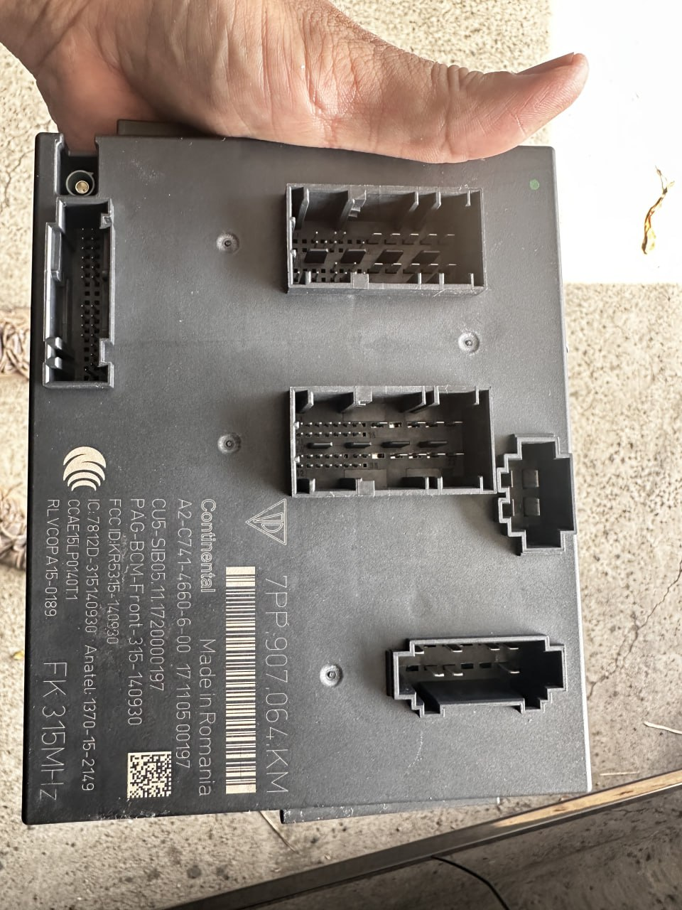
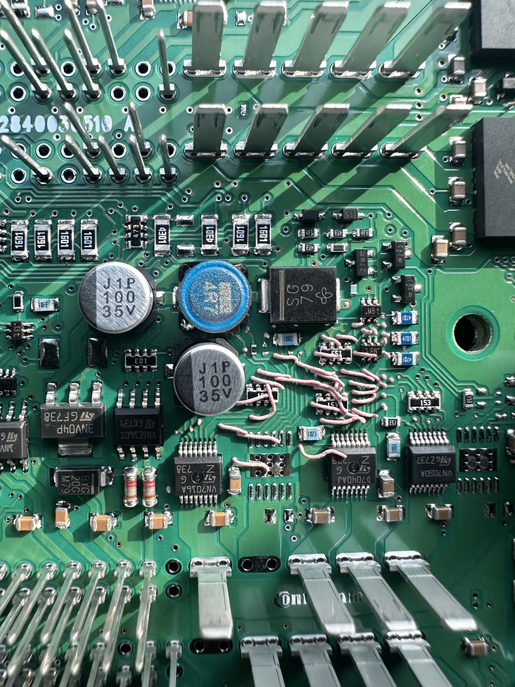
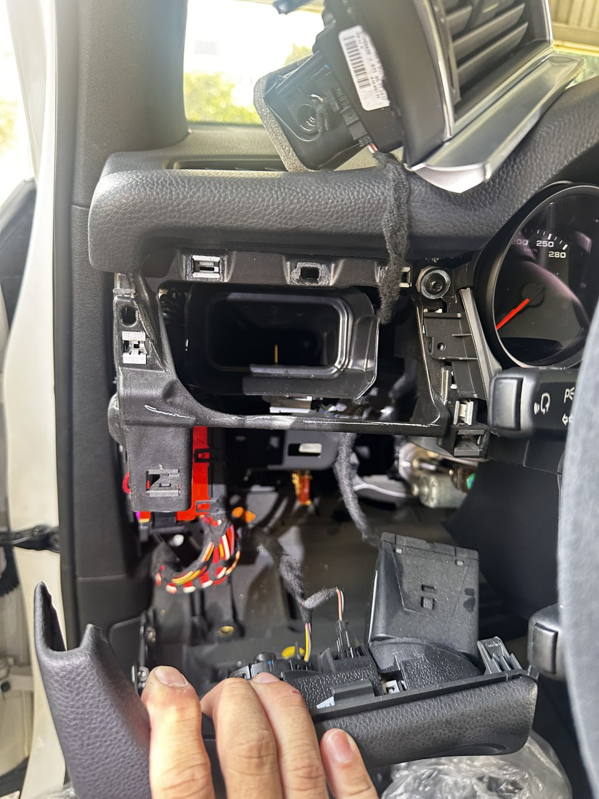
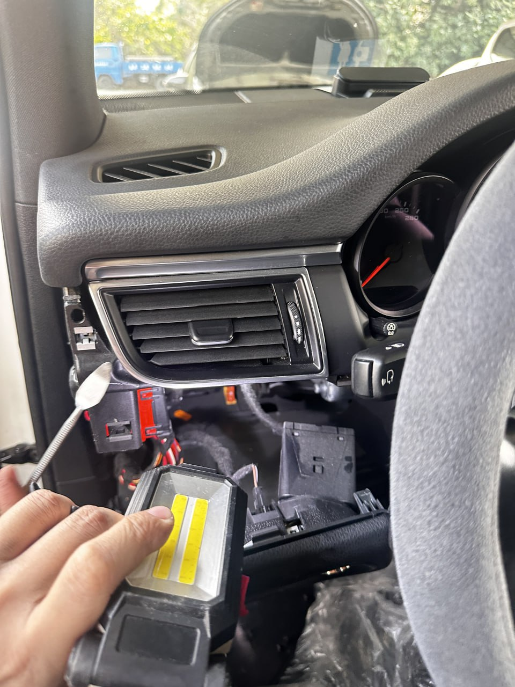
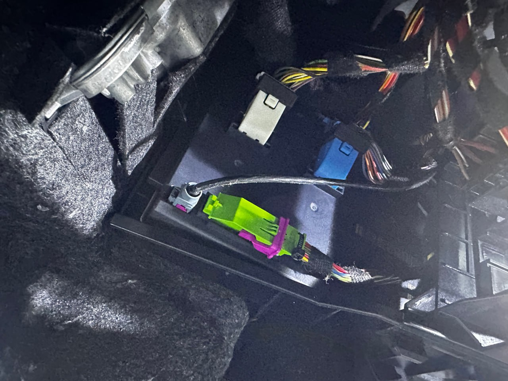

核心組件：Porsche BCM (Body Control Module) 防盜電腦總成

技師視角：拆解後的 BCM 底層電路，展示精密數據對接點
進口車款的數據壁壘：Porsche BCM
保時捷（Porsche）的防盜系統一直以其嚴密的加密架構著稱。其中，BCM (車身控制模組) 扮演著至關重要的角色。它不僅管理車輛電系，更存放了與智慧鑰匙匹配的關鍵防盜代碼。當車主面臨鑰匙遺失或系統鎖死時，傳統的 OBD 通訊往往無法直接解鎖。
現場作業：專業的拆解與復原


在極致核心的救援現場，我們展現的不只是電子技術，更是對豪車內裝的敬畏。如圖所示，為了存取位於儀表台深處的 BCM 模組，技師必須進行極為精密的拆解作業，確保每一處卡榫與皮革都得到完美的保護。
數據讀取的深度工藝
獲取 BCM 數據是整個救援流程的核心。我們使用頂規的編程設備，直接對接模組內部的晶片：
- ● 底層數據提取： 繞過外層加密限制，直接讀取 MCU 內部的防盜十六進位數據。
- ● 安全演算校驗： 確保讀取的數據完整無誤，避免重寫過程造成模組損壞。
- ● 密鑰重構生成： 根據讀取的數據，在現場生成全新的原廠規智慧感應鑰匙。

實車紀錄：BCM 模組於車內的安裝環境與接線細節